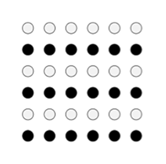

Frontend Design en Development
In deze tab bar geef ik uitleg van de theorie die tijdens de lessen FDD op de CHE zijn behandeld.
Interaction Design
Week 1
Introductie
Voordat ik begin met het onderwerp interaction design, leg ik even kort uit waarom deze website gemaakt is en wat het vak FDD is.
Voor het vak Frontend Design en Development (FDD) zijn we vanaf de eerste lesweek bezig geweest met het maken, ontwikkelen en vormgeven van een eigen website, waarin je de lesstof en het ontwerpproces beschrijft.
Wat is FDD?
FDD bestaat uit Frontend Design en uit Development. Frontend Design gaat over het "vooraanzicht" van een website. Eigenlijk hetgeen wat je als gebruiker ziet wanneer je een website of app bezoekt. Met design geef je de frontend vorm, kleur en uitstraling.
Het woord development geeft aan, dat je website of app door middel van testen en het verrichten van aanpassingen je frontend verbeterd wordt.
Wat is Interaction Design?
Als we het hebben over Interaction Design, dan praten we over een onderdeel van User Experience Design. User Experience Design kenmerkt de gebruikerservaring in zijn geheel van een digitaal product, denk aan een website, applicatie, webapp, etc. Interaction Design richt zich juist op het gedeelte van de interactie tussen de gebruiker en het digitale product. Het product moet voor de gebruiker juist leuk en interessant zijn. Een goed grafisch design; een goed visueel ontwerp, details en communicatie zijn van belang voor een goede gebruikerservaring. Als een design er aantrekkelijk uitziet, blijft de gebruiker graag op je website.
Kortom, een UX Designer onderzoek en ontwerp je de beste gebruikerservaring en een IX Designer bedenkt een concept voor interactie tussen de gebruiker en het product.
Als onderdeel van een van de leertaken van de afgelopen weken moest er een toets over Interaction Design gemaakt worden. Klik hier om mijn resultaat van de toets te bekijken.
Usability
Usability gaat over hoe gebruiksvriendelijk een website of ander digitaal product is. Verder over hoe uitdagend het is voor een bezoeker om verder te klikken, te scrollen of te swipen. Je zorgt er dus met usability voor dat de klant een optimale gebruikerservaring heeft.
Accessibility
Een ontwerp is pas bruikbaar, wanneer het toegankelijk is voor de gebruiker. Ontwerpers van bijvoorbeeld een website moeten rekening houden met de toegang tot de website. Wanneer dit lukt, stelt ook mensen met bijvoorbeeld een handicap in staat om wat er op jouw website staat waar te nemen. Mensen met een visuele handicap kunnen lastig tot geen tekst lezen op jouw website. Een mooie oplossing is dan om schermleessoftware te gebruiken, zodat zij wel woorden kunnen horen, en toch de gegeven informatie op de website meekrijgen.
Wireframing
Een wireframe is een visueel instrument voor het ontwikkelen van een website of applicatie. Je kunt het ook wel zien als een bouwtekening van de website. In deze bouwtekening zullen de verschillende onderdelen die op de website aanwezig zullen zijn staan.
Wireframes worden ingezet nadat de doelstellingen van de website bekend zijn, dan kunnen de ideeen in wireframes uitgewerkt worden. Met wireframes kun je voor jezelf een helder beeld krijgen of het idee goed is uitgwerkt, maar ook of de website aan de gebruiksvriendelijkheid voldoet.
Om een wireframe te maken, kun je pen en papier gebruiken, maar er zijn ook een aantal programmes die je hierbij kunnen helpen als Balsamiq of Adobe Design.
Empathize en Define
Als eerste moet een Interaction Designer weten voor welke doelgroep ze een product ontwerpen en wat het doel moet zijn van het product. Er vindt daarom dus eerst onderzoek plaats naar de gebruiker van het product. In onderstaande afbeelding wordt daarom begonnen met de Empathize fase, er wordt een grote hoeveelheid informatie tijdens deze fase opgenomen, die voor belang zijn in de volgende fasen van het project.
In de Define fase worden de verzamelde ideeën en informatie geanalyseerd met als doel hoe ze effectief kunnen worden gebruikt.
Ideate en Prototype
Vervolgens worden tijdens de Ideate fase alle informatie uit de vorige fasen gebruikt om ideeën te genereren. Ideeën die geheel out of the box kunnen zijn, of juist enorm logisch. Het is van belang om genoeg ideeën op papier te hebben, zodat je een ruime keuzemogelijkheid hebt.
Test en Implement
De vijfde en laatste fase heet Test. Tijdens deze fase test de Designer het prototype gemaakt in fase vier. Er wordt gekeken of het betreffende protoype het probleem oplost wat in fase één en twee is geanalyseerd. Mocht dit niet het geval zijn, kan er net zo lang terug worden gegaan naar vorige fasen, totdat het probleem is opgelost en het eindproduct naar alle eisen voldoet.
Wireframing en Interfaces
Week 2
Wireframes
Een wireframe is een visueel instrument voor het ontwikkelen van een website of applicatie. Je kunt het ook wel zien als een bouwtekening van de website. In deze bouwtekening zullen de verschillende onderdelen die op de website aanwezig zullen zijn staan. Bij wireframes gaat het om organisatie en structuur, stijldetails komen pas later aan bod.
Wireframes worden ingezet nadat de doelstellingen van de website bekend zijn, dan kunnen de ideeen in wireframes uitgewerkt worden. Met wireframes kun je voor jezelf een helder beeld krijgen of het idee goed is uitgwerkt, maar ook of de website aan de gebruiksvriendelijkheid voldoet. Een andere reden om wireframes te maken, is om anderen makkelijk en snel je idee te laten zien.
Om een wireframe te maken, kun je pen en papier gebruiken, maar er zijn ook een aantal programmes die je hierbij kunnen helpen als Balsamiq of Adobe Design.
Soorten wireframes
Wireframes worden meestal opgedeeld in drie categorieën: low-fidelity, mid-fidelity en high-fidelity. Het woord fidelity geeft aan hoeveel details het ontwerp bevat.
Low-fidely wireframes zijn vaak ruwe lijnen die met name gericht zijn op de lay-out. Voor low-fidely wireframes is het niet noodzakelijk om te werken in een computerprogramma want daarvoor kun je ook op papier aan de slag. Bij low-fidely wireframes moet je je ontwerp dus eenvoudig houden. Laat daarom afbeeldingen, vultekst en pictogrammen weg.
Bij mid-fidely wireframes moet de focus worden gelegd op de schaal en de grootte van de elementen in verhouding tot het werkvenster. Het werkt de schetsen van een low-fidely wireframe uit tot een meer gedetaileerde vorm van het ontwerp. Stijl komt nog minstens aan bod. Je gebruikt daarom nog geen kleur en lettertypes, zo krijg je bijvoorbeeld met je projectteam of opdrachtgever nog geen discussies over het design.
Tot slot hebben we high-fidely wireframes. Bij dit soort wireframes draait alles om nauwkeurigheid. Het ontwerp begint op je eindproduct te lijken. Elk element moet zich op de juiste plek bevinden. Elk menu en elke knop moet functioneel zijn voor de gebruiker. De functionaliteit van een high-fidely wireframe ligt anders dan bij low- en mid-fidely wireframes. Bij high-fidely wireframes gebruiken ontwerpers het ontwerp juist om de opdrachtgever het eindontwerp goed te laten keuren.
7 stappen tot het maken van een goede wireframe
Begin met woorden. Wat heb je nodig om tot het eindproduct te komen?
1. Bedenk voor wie je het maakt. In het geval voor deze website voor eerstejaars studenten die mogelijk geïnteresseerd zijn in deze studie. Of misschien voor jezelf, om te oefenen met deze termen en het oefenen met HTML en CSS.
2. Bedenk waarom je het maakt en wat het doel van je product is. Je kan bijvoorbeeld denken aan; bewijs van je competenties, ervaring opdoen, iets leren of gewoon om je studiepunten binnen te halen.
3. Bedenk welke (inter)acties er nodig zijn.
Denk aan:
- Navigeren naar volgende pagina’ s op de website.
- Hyperlinks naar andere websites.
- Contactformulier
- Reageren op de website
- Bel en mailfuncties
- Filmpjes
4. Creëer een sitemap. Hoe ga je via de ene naar de andere pagina?
5. Welke zaken zijn van belang? Denk bijvoorbeeld aan de wensen van de klant of de opdrachtgever.
6. Gebruik een ontwerp, of een bestaand ontwerp waar je ideeën van kunt opdoen.
7. Tot slot is het belangrijk dat je je laat inspireren!
Usability Testing
Week 3
Wat verstaan we onder Usability Testing?
Met behulp van Usability tests, kan de gebruiksvriendelijkheid van bijvoorbeeld websites, apps of een ontwerp getest worden. Je laat een testpersoon individueel verschillende taken uitvoeren op je digitale product, waarbij het ontwerp van website wordt getest en tot slot om feedback van de gebruiker vraagt. Het is een effectieve en leerzame manier van testen om de gebruiksvriendelijkheid van je digitale product te verbeteren.
Usability testing is belangrijk omdat mensen van een website afhaken, wanneer zij onnodige barrières opgelegd krijgen. Als mensen zich niet betrokken voelen bij je website, dan komt men niet meer terug. Daarom kan er met behulp van usability tests getest worden of je doelgroep je website gebruikt zoals je dat voor ogen hebt.
Hoeveel gebruikers zijn er nodig voor een succesvolle Usability Test?

Er gaat geregeld de vraag rond hoeveel mensen er nodig zijn voor een geslaagde Usability test. In de grafiek hiernaast ( Nielsen Norman Group (2000) Why You Only Need to Test with 5 Users [Afbeelding]) kun je aflezen dat vijf users al 80% van de fouten ontdekt heeft. Bij een enkele testgebruiker heb je al bijna een derde van de fouten ontdekt. Een tweede gebruiker zal de ontdekte fouten van de eerste test ook naar voren halen, maar zal ook
met nieuwe fouten terugkomen, die de eerste user niet heeft waargenomen. Een derde gebruiker zal veel fouten zien die bij de eerste twee gebruikers
al zijn waargenomen. Uiteraard zal de derde gebruiker een kleine hoeveelheid nieuwe fouten zien, maar lang niet zoveel als de eerste en tweede gebruiker.
Naarmate er meer gebruikers worden betrokken bij de Usability test, zul je in verhouding steeds minder nieuwe fouten ontdekken, en hoor je steeds weer dezelfde fouten terugkomen. Na de vijfde gebruiker is het zonde van je tijd door dezelfde bevindingen meermaals aan te zien.
Wat moet je doen tijdens de Usability Test?
1. Stel een vraag tegelijk.
2. Gebruik geen suggestieve vragen. Dus NIET vind je het ook zo te klein? MAAR Wat vind je van de maat?
3. Observeer en draag zorg voor interactie.
4. Wees stil
5. Zorg voor een notulist en een aparte begeleider. Dus testpersoon, notulist en de vragensteller.
6. De gebruiker heeft altijd gelijk.
Drie rollen voor de test
- User. Dit is de gebruiker en testpersoon van je website.
- Moderator. Dit is degene die het ontwerp heeft gemaakt. De moderator stelt de vragen en leidt de usability test in.
- Observer. Dit is de notulist die tijdens de test aantekeningen maakt van de feedback die de user geeft over het ontwerp.
Meestal bevinden de user, moderator en observer zich in één ruimte. Dit maakt het makkelijker om lichaamstaal, gebaren en gezichtsuitdrukkingen vast te leggen en mee te nemen in het eindoordeel. Een andere opstelling kan zijn dat de ruimte van de observer heel stuk verderop ligt, want dat zorgt voor minder druk voor de user. Bovendien horen de user en de moderator de observer dan niet.
Belangrijk tijdens een Usability Test
Maak allereerst een testscript. Hierin ben je de test aan het inleiden en bedank je dat de user mee wilt werken aan de test. Je vermeld dat je het design test, en dus niet de gebruiker. Vervolgens schets je de context situatie. Je vermeld bijvoorbeeld dat dit een website is voor mogelijk aankomende eerstejaars studenten die geïnteresseerd zijn in de opleiding HBO-ICT aan de CHE. Tot slot vermeld je dat alle feedback welkom is. Handig om te weten is, dat je de gebruiker door deze informatie op zijn gemak stelt. Maak bijvoorbeeld gebruik van een kop koffie en maak met elkaar kennis voordat je de test start.
Tijdens de test geef je verschillende taken aan de gebruiker. Je kan bijvoorbeeld de opdracht geven dat de user een overzicht moet krijgen van wat het vak Fronted Design en Development (FDD) inhoudt.
Geef tijdens de test ook alternatieven (Een AB test noem je dat. Dus de eerste testpersoon geef je eerst contactformulier A en dan contactformulier B en de tweede testpersoon juist andersom) Vaak vinden mensen het tweede alternatief beter.
Nog drie belangrijke tips voor tijdens de test:
1. Laat je gebruikers ervaren en observeer met name wat de users doen.
2. Vraag de gebruikers na hun taak vertellen over hun ervaring.
3. Vraag follow up vragen en verdieping.
Afsluitend deelt de user de ervaringen van de website en stel je nog een aantal afsluitende vragen en bedankt je de user voor zijn tijd en moeite voor zijn deelname.
Return on Investment
Tot slot nog informatie over het begrip Return On Investment (ROI). Dit begrip geeft de verhouding weer tussen opbrengsten en investeringen. Vaak wordt dit uitgedrukt in een percentage. Wanneer een bedrijf 2000 euro aan investeringen heeft uitgegeven en er 4000 euro mee heeft verdiend, dan heeft dat bedrijf een ROI van 200%.
Wat krijg je ervoor terug als je ergens in investeert?
- Naamsbekendheid, populariteit en een goede reputatie betekend meer geld voor de onderneming en dus meer omzet.
- Tijd. Gebruikers van een website willen bijvoorbeeld zo snel mogelijk antwoord hebben op vragen. Denk bijvoorbeeld aan een contactformulier op je website. Hartstikke handig, maar vaak krijgt de klant niet direct antwoord. Een chatbot op je website is dan een goed alternatief.
- Tevreden gebruikers. Wanneer gebruikers van een wesbite tevreden zijn, zullen zij in de toekomst vaker terugkomen naar jouw website en dit bouwt een vaste klantenkring op.
- Vertrouwen. Als je een goede website hebt die voldoet aan de verwachtingen van de gebruiker, dan geeft dat vertrouwen.
Grafisch design en Accessibility
Week 4
Wat is grafisch design eigenlijk?
Grafisch design is het visueel vormgeven van ideeën in verschillende media. Met als doel om mensen iets mee te delen. Dit vereist zowel artistieke als technische vaardigheid. Een goed grafisch design zorgt voor bruikbaarheid, begrijpbaarheid en voor emotie van je ontwerp.
Bij een grafisch ontwerp moeten mensen je ontwerp kunnen snappen. Wanneer er uitleg van de designer nodig is, dan is het geen goed ontwerp. Het moet voor de gebruiker duidelijk zijn hoe je de website moet bedienen.
Wanneer je begint met ontwerpen moet je je afvragen hoe je informatie op de gebruiker wilt laten overbrengen. Je kunt de website vullen met veel tekst, maar dan moet je echter rekening houden dat de meeste mensen zeker 20-28% van de woorden op jouw pagina lezen. Een handig alternatief zou een video kunnen zijn, want 80% kijkt een video op de betreffende pagina.
Wat ook niet onmisbaar is tijdens het grafisch ontwerpen van jouw pagina is de overweging welke sfeer jouw website moet uitstralen, de leesbaarheid van de website (denk erom dat kleurcontrast moet kloppen), welke font er gebruikt gaat worden en hoe de website moet uitstralen.
Je kunt in een aantal digitale programma’s je grafisch design uitwerken. Voorbeelden hiervan zijn: Photoshop, Adobe XD, Figma, Axure, Sketch en InVisionapp.
Accessibility
Of denk aan hoe mensen informatie tot zich nemen. Iedereen met of zonder beperking heeft toegang tot bepaalde voorzieningen.
Voor mensen met ADHD of autisme is het handig om je website simpel te houden. Voor mensen met een visuele beperking is het belangrijk dat de website een screen reader bevat. Of mensen die een auditieve beperking hebben, dan is het handig om ondertiteling te gebruiken voor video’s die op je website staan. Mensen die een fysieke beperking hebben en tekst moeten typen, daarvoor kan een spraak naar tekst functie goed van te pas komen. Er zijn dus talloze mogelijkheden om voor iedereen je website toegankelijk te maken, alleen hoe ver ga je?
Bij de functie van ondertiteling hebben veel meer mensen profijt dan die kleine groep mensen slechthorenden. Als je bijvoorbeeld in een luidruchtige treincoupe zit, dan vinden mensen het ook fijn om van ondertiteling gebruik te maken. Je zal dus voor jezelf een afweging moeten maken afhankelijk van je doelgroep en welke functies je belangrijk vind voor je website.
Gestaltprincipes
Er zijn een aantal simpele ontwerpprincipes voor je website waardoor je interessantere en boeiendere visuele ervaringen creëert. Deze ontwerpprincipes heten namelijk de Gestaltprincipes, want door deze goed toe te passen worden gebruikers (onbewust) geholpen in het bereiken van hun doel.
Ik bespreek er drie:
- Principe van nabijheid/proximity
In onderstaande afbeelding zie je aan de linkerkant een grote groep met bolletjes en aan de rechterkant een dezelfde hoeveelheid bolletjes, maar dan verdeeld in drie kleinere, gelijke groepjes. In bijvoorbeeld navigatiemenu’s staan veel onderwerpen die staan gegroepeerd, zodat de gebruiker alle informatie die overbodig is kan negeren. Dit wordt namelijk toegepast in websitemenu’s. Wanneer een gebruiker opzoek is naar muziek en binnen de categorieën van het menu staan gegroepeerd films, games en muziek, dan kan de gebruiker de eerste twee kolommen negeren en dus focussen op de laatste kolom.
Kortom, zorg ervoor dat elementen die inhoudelijk bij elkaar horen, ook bij elkaar worden geplaatst.

DoubleWeb (2020). Principes voor een betere gebruikservaring op je website, nabijheid [Afbeelding]
- Principe van gelijkenis/simularity
In de afbeelding hieronder ziet men elementen die op elkaar lijken als geheel. Vrijwel ieder mens zal dit plaatje opvatten als horizontale rijen met zware bolletjes en witte bolletjes. Weinig mensen zullen hier verticale rijen met zwarte en witte bolletjes door elkaar van maken.
Dus zorg ervoor dat elementen die qua inhoud of functie gelijk zijn, ook visueel op elkaar moeten aansluiten.

Interaction Design Foundation (2020). The Law of Similarity [Afbeelding]
- Principe van sluiting/closure
Dit principe laat zien dat mensen de neiging hebben om incomplete of gedeeltelijk bedekte figuren te zien als volledig. Hoewel er in de afbeelding hieronder stukjes zijn weggelaten zul je toch een cirkel en een rechthoek herkennen.
Bij veel apps worden notificaties weergegeven die voor een gedeelte overlappen met het icoon van de app. Dus wanneer er beperkte ruimte mocht zijn om iets weer te geven is het mogelijk om figuren te laten overlappen.
Wikipedia File (2008). Gestalt Closure [Afbeelding]
{kind=link}
Introductie HTML
Week 5
In onderstaande video wordt kort maar duidelijk uitgelegd wat HTML precies is.
Bron: YouTube, Codecafé (2021).
De drie talen op een rijtje:
HTML is voor de documentstructuur.
CSS is voor de opmaak.
JavaScript is voor de dynamische functionaliteit
CSS en Frameworks
Week 6
Box model
Het box model, waarin elk html element geplaatst wordt - heeft een marge (margin), een rand (border) en een opvulling (padding). Van deze drie kenmerken kan de 'dikte' voor alle vier de zijden worden bepaald. Cascading Style Sheets (CSS) gaat ervan uit dat elk element staat in een rechthoekig gebied, de box.
Van binnen naar buiten bestaat de box uit:
- De inhoud van het element (content)
- De padding
- De border
- En tot slot de margin.

Jackie Ha (2019). What is the CSS Box Model? [Afbeelding]
Positionering
Om bepaalde elementen in je html pagina goed te positioneren, moet je de juiste positon tag gebruiken. Ik bespreek drie belangrijke postion tags.
static: Een element met position: static; is niet op een speciale manier gepositioneerd.
relative: De positie relative gedraagt zich hetzelfde als static, tenzij je nog een aantal extra verhoudingen toevoegt (denk aan top, right, bottom en left), want dan zal de positie aangepast worden ten opzichte van zijn originele positie.
fixed: Een fixed element is relatief gepositioneerd ten opzichte van de viewport, wat inhoud dat dit element altijd op dezelfde plek staat ongeacht of de pagina wordt gescrold.
Flexbox
In onderstaande video wordt de flexbox in CSS duidelijk en helder uitgelegd.
Bron: YouTube, Fireship (2020)
Wat zijn CSS Frameworks?
CSS-frameworks zijn tools die door UI-ontwikkelaars worden gebruikt om hun werk gemakkelijker te maken. In plaats van tijd te besteden aan het beginnen met een leeg document, hebben ontwikkelaars de mogelijkheid om snel gebruikersinterfaces op te starten en eigen aanpassingen daarin toe te passen.
Hoe kom je aan Frameworks?
Het internet staat hier vol mee. Je kunt er allerlei vinden op websites als;
- Getbootstrap.com voor CSS en JS frameworks.
- Tailwindcss.com voor CSS frameworks.
- Bulma.io voor CSS frameworks.
- En milligram.io voor CSS frameworks.
Toegankelijkheid meten van je website
Wanneer je wilt weten of het contrast op je website voldoende en voor iedereen te lezen en te zien is, kun je gebruik maken van accessibility tools. Een handige tool is lighthouse. Om lighthouse te bereiken moet je het volgende uitvoeren;
- Ga naar de website die je wilt testen op toegankelijkheid.
- Druk op F12.
- Ga naar Lighthouse.
- Klik alleen accessibility aan.
- Kies tot slot je device; desktop of mobile.